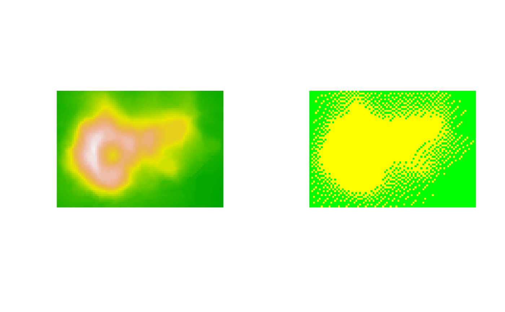

Dither is an intentional form of noise applied to an image to avoid colour
banding when reducing the amount of colours in that image. This function
applies dithering to a grDevices raster image.
Usage
dither(x, method, ...)
# S3 method for class 'raster'
dither(
x,
method = c("none", "floyd-steinberg", "JJN", "stucki", "atkinson", "burkse", "sierra",
"two-row-sierra", "sierra-lite"),
palette,
mode = c("none", "HAM6", "HAM8"),
...
)
# S3 method for class 'matrix'
dither(
x,
method = c("none", "floyd-steinberg", "JJN", "stucki", "atkinson", "burkse", "sierra",
"two-row-sierra", "sierra-lite"),
palette,
mode = c("none", "HAM6", "HAM8"),
...
)Arguments
- x
Original image data that needs to be dithered. Should be a raster object (
grDevices::as.raster()), or a matrix ofcharacterstring representing colours.- method
A
characterstring indicating which dithering method should be applied. See usage section for all possible options (Note that the "JJN" is the Jarvis, Judice, and Ninke algorithm). Default is "none", meaning that no dithering is applied.- ...
Currently ignored.
- palette
A palette to which the image should be dithered. It should be a
vectorofcharacterstrings representing colours.- mode
A
characterstring indicating whether a special Amiga display mode should be used when dithering. By default ‘none’ is used (no special mode). In addition, ‘HAM6’ and ‘HAM8’ are supported. SeerasterToBitmap()for more details.
Value
Returns a matrix with the same dimensions as x containing
numeric index values. The corresponding palette is returned as attribute,
as well as the index value for the fully transparent colour in the palette.
Details
The approaches implemented here all use error diffusion to achieve dithering. Each pixel is scanned (from top to bottom, from left to right), where the actual colour is sampled and compared with the closest matching colour in the palette. The error (the differences between the actual and used colour) is distributed over the surrounding pixels. The only difference between the methods implemented here is the way the error is distributed. The algorithm itself is identical. For more details consult the listed references.
Which method results in the best quality image will depend on the original image and the palette colours used for dithering, but is also a matter of taste. Note that the dithering algorithm is relatively slow and is provided in this package for your convenience. As it is not in the main scope of this package you should use dedicated software for faster/better results.
References
R.W. Floyd, L. Steinberg, An adaptive algorithm for spatial grey scale. Proceedings of the Society of Information Display 17, 75-77 (1976).
J. F. Jarvis, C. N. Judice, and W. H. Ninke, A survey of techniques for the display of continuous tone pictures on bilevel displays. Computer Graphics and Image Processing, 5:1:13-40 (1976).
https://en.wikipedia.org/wiki/Floyd-Steinberg_dithering
https://tannerhelland.com/4660/dithering-eleven-algorithms-source-code/
See also
Other colour.quantisation.operations:
index.colours()
Other raster.operations:
AmigaBitmapFont,
as.raster.AmigaBasicShape(),
bitmapToRaster(),
index.colours(),
rasterToAmigaBasicShape(),
rasterToAmigaBitmapFont(),
rasterToBitmap(),
rasterToHWSprite(),
rasterToIFF()
Examples
## first: Let's make a raster out of the 'volcano' data, which we can use in the example:
volcano.raster <- as.raster(t(matrix(terrain.colors(1 + diff(range(volcano)))[volcano -
min(volcano) + 1], nrow(volcano))))
## let's dither the image, using a predefined two colour palette:
volcano.dither <- dither(volcano.raster,
method = "floyd-steinberg",
palette = c("yellow", "green"))
## Convert the indices back into a raster object, such that we can plot it:
volcano.dither <- as.raster(apply(volcano.dither, 2, function(x) c("yellow", "green")[x]))
par(mfcol = c(1, 2))
plot(volcano.raster, interpolate = FALSE)
plot(volcano.dither, interpolate = FALSE)

## results will get better when a better matching colour palette is used.
## for that purpose use the function 'index.colours'.